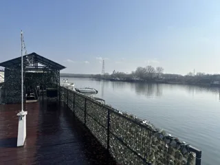
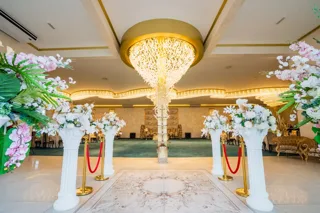
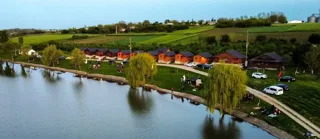
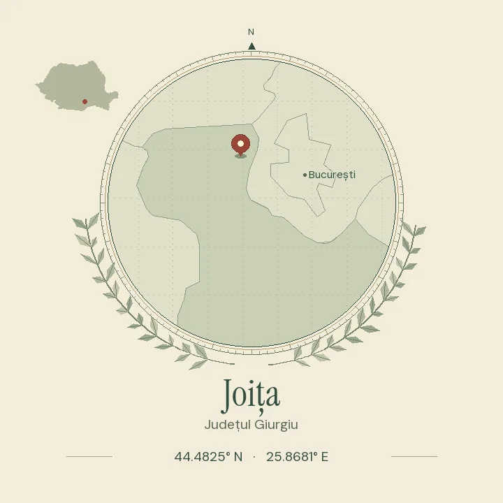
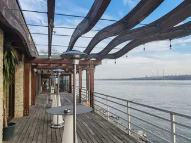
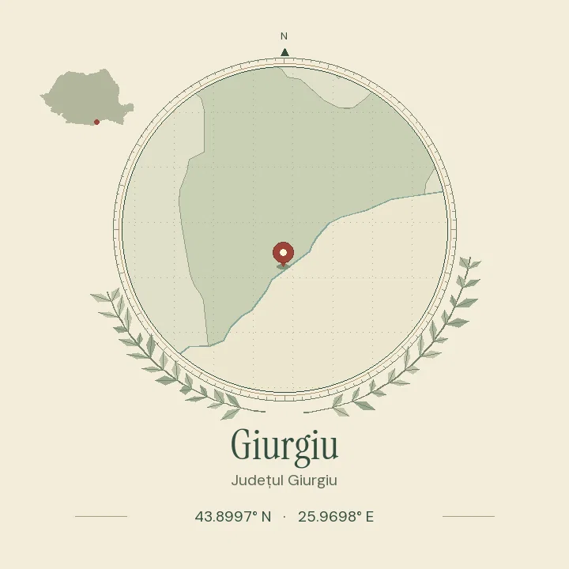

Locații de nuntă în județul Giurgiu
- locații în director
- 6
- medie ponderată Google
- 4,2 / 5
- evaluări Google
- 815
Cum alegi unde mergi la vizionare
Joița, Putineiu și municipiul Giurgiu nu sunt interschimbabile pentru invitații care pleacă din București. Localitatea exactă din fișă vă ajută să solicitați un tarif de microbuz pentru întregul traseu. Întrebați și dacă există un loc de întoarcere chiar la proprietate.
Foișorul și parcarea în curte apar în relatările de la Perla Dunării. Aceste repere vă pot ajuta să evaluați o reuniune mică după cununie. Întrebați dacă foișorul se poate rezerva odată cu camerele și cât de aproape de masă ajunge un invitat care coboară din mașină. Pentru o proprietate din Joița, notați aceleași detalii înainte să alegeți între cele două trasee.
Două adrese pentru o zi de vizionări
Pe hartă, între aceste două proprietăți sunt 18,0 km în linie dreaptă. Deschide indicațiile de drum din fișe ca să vezi traseul pe șosea înainte de a stabili a doua întâlnire.
- Complex Metropolitan · Strada Bălănoaiei 4-8, Giurgiu
- Pescuit la Conac · dj 504 a, 087185 Putineiu
Explorează după localitate
Toate locațiile din județul Giurgiu
Ordinea ține cont de nota Google și de numărul evaluărilor. Cum calculăm ordinea

Fotografie a locației · Sursa fotografiei Giurgiu · Pensiune
Pontonul de pe Dunăre
Pentru un oaspete la Pontonul de pe Dunăre, terasa intimă a fost loc de plajă, iar la sosire a găsit un espressor și frigiderul pregătit cu băuturi și gheață.
Aleea Plantelor, 080027 Giurgiu+40 745 608 804
Fotografie a locației · Sursa fotografiei Giurgiu · Restaurant
Complex Metropolitan
Restaurant cu salon de nunți, piscină și cort pe strada Bălănoaiei din Giurgiu; recenzii împărțite, media 4,4 din 207 de evaluări.
Strada Bălănoaiei 4-8, Giurgiu+40 726 355 837
Fotografie a locației · Sursa fotografiei Putineiu · Lac de pescuit
Pescuit la Conac
Pescuit la Conac. Pentru o familie atrasă de mesele lângă apă, acesta este un indiciu că malul poate avea și o altă utilizare pe durata petrecerii.
dj 504 a, 087185 Putineiu+40 769 955 294
Hartă ilustrată Joița · Restaurant
CONACUL CU NUCI
Restaurant cu cazare în Joița, Giurgiu, unde s-au ținut nunți și botezuri; loc de joacă, acces pentru scaun rulant și o observație despre curățenie.
DJ602 4 waze conaculcunuci, Calea București 4, 087150 Joița+40 722 392 238
Fotografie a locației · Sursa fotografiei Giurgiu · Pensiune
Cazare Pensiune Giurgiu - Perla Dunării
Pensiune mică în Giurgiu cu foișor și grătar în curte; atenție la baia comună de la parter. Nota 3,7 din 123 de evaluări pe Google.
Pensiune perla dunarii, Strada 1 Decembrie 1918 67, 080191 Giurgiu+40 720 687 892
Hartă ilustrată Giurgiu · Castel
Vila Cu Lei JHN Giurgiu
Vila Cu Lei JHN Giurgiu. În documentarea de pe strada Rozelor, vila din Giurgiu apare dinspre stradă, dincolo de stâlpii unei porți și ai unui zid de incintă.
Strada Rozelor, Giurgiu+40 735 392 319
Întrebări despre locațiile din județul Giurgiu
Ce proprietăți din județul Giurgiu au grădină sau terasă?
Pontonul de pe Dunăre (ponton); Pescuit la Conac (terasă, foișor); Cazare Pensiune Giurgiu - Perla Dunării (terasă, ponton). Cere administratorului condițiile de folosire pentru o petrecere privată.
Care locație din județul Giurgiu are cele mai multe evaluări Google?
Pescuit la Conac are 245 de evaluări în profilul Google folosit la documentare. Evaluările acoperă și alte experiențe la proprietate, inclusiv vizitele fără eveniment.
Unde apare o intrare accesibilă în județul Giurgiu?
Profilurile Google indică o intrare accesibilă la Complex Metropolitan, CONACUL CU NUCI. Pentru o cununie în exterior, cere detalii despre traseul dintre intrare și zona cu scaune.